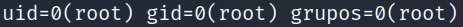
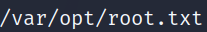
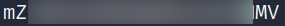

5.3 Getting the second flag
1. On the “Reverse Shell” you have got run the following commands.
id
Output:

2. Find the “root” flag.
find / -name root.txt 2>/dev/null
Output:

3. Show the flag.
cat /var/opt/root.txt
Output:

mZ***********************MV